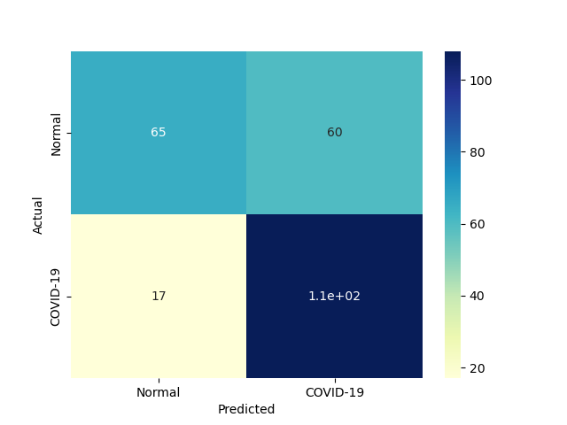

| 6 |
NonLinearSVM |
Non Linear Support Vector Classification |
0.062538 |
0.000000 |
116 |
68 |
57 |
9 |
0.928 |
0.544 |
0.670520 |
0.736 |
0.264 |
0.778523 |
1.055902 |
12.448825 |
inf |
|
 |
 |
| 9 |
AdaBoostClassifier |
An AdaBoost classifier |
1.202992 |
0.062495 |
104 |
76 |
49 |
21 |
0.832 |
0.608 |
0.679739 |
0.720 |
0.280 |
0.748201 |
1.015217 |
0.621950 |
11.972091 |
|
|
|
| 8 |
MLP |
Multi-layer Perceptron classifier. |
1.031602 |
0.000000 |
98 |
79 |
46 |
27 |
0.784 |
0.632 |
0.680556 |
0.708 |
0.292 |
0.728625 |
0.987234 |
0.706304 |
inf |
|
|
|
| 7 |
LP |
Linear perceptron classifier |
0.015664 |
0.000000 |
108 |
65 |
60 |
17 |
0.864 |
0.520 |
0.642857 |
0.692 |
0.308 |
0.737201 |
0.965162 |
47.064547 |
inf |
 |
 |
 |
| 1 |
RealBoost |
An RealBoost classifier |
3.812104 |
0.000000 |
102 |
70 |
55 |
23 |
0.816 |
0.560 |
0.649682 |
0.688 |
0.312 |
0.723404 |
0.953583 |
0.189765 |
inf |
 |
 |
|
| 4 |
KNeighborsClassifier |
Classifier implementing the k-nearest neighbors vote |
0.000000 |
0.046903 |
110 |
58 |
67 |
15 |
0.880 |
0.464 |
0.621469 |
0.672 |
0.328 |
0.728477 |
0.932863 |
inf |
15.531438 |
|
 |
 |
| 5 |
LinearSVM |
Linear Support Vector Classification |
0.078083 |
0.000000 |
97 |
67 |
58 |
28 |
0.776 |
0.536 |
0.625806 |
0.656 |
0.344 |
0.692857 |
0.896507 |
8.873310 |
inf |
|
|
|
| 2 |
BernoulliNBC |
Naive Bayes classifier for multivariate Bernoulli models |
0.000000 |
0.000000 |
110 |
51 |
74 |
15 |
0.880 |
0.408 |
0.597826 |
0.644 |
0.356 |
0.711974 |
0.889869 |
inf |
inf |
|
 |
|
| 3 |
GaussianNBC |
Gaussian Naive Bayes (GaussianNB) |
0.000000 |
0.000000 |
102 |
31 |
94 |
23 |
0.816 |
0.248 |
0.520408 |
0.532 |
0.468 |
0.635514 |
0.743073 |
inf |
inf |
|
 |
 |
| 0 |
DiscreteNBC |
DiscreteNBC |
0.046870 |
0.015624 |
61 |
54 |
71 |
64 |
0.488 |
0.432 |
0.462121 |
0.460 |
0.540 |
0.474708 |
0.606751 |
10.128086 |
30.383177 |
 |
 |
 |
{kind=link}
{kind=link}
{kind=link}
{kind=link}
{kind=link}
{kind=link}
{kind=link}
{kind=link}
{kind=link}
{kind=link}
{kind=link}
{kind=link}
{kind=link}
{kind=link}
{kind=link}
{kind=link}